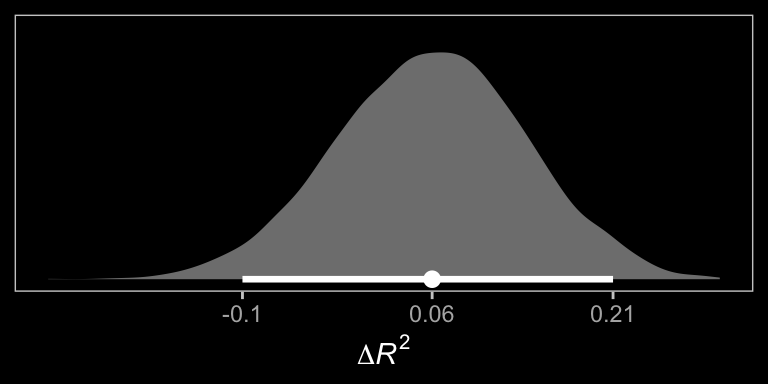
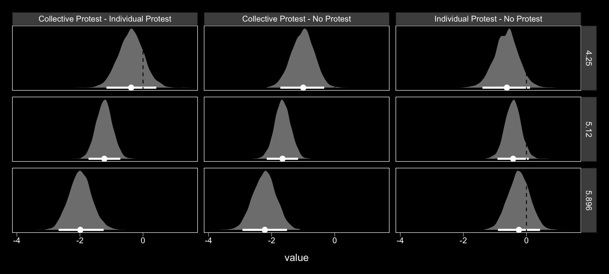
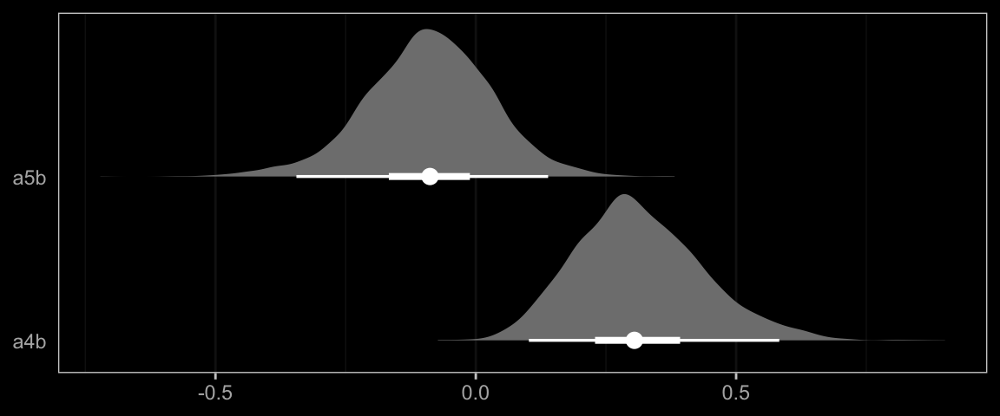

13 Conditional Process Analysis with a Multicategorical Antecedent
13.1 Revisiting sexual discrimination in the workplace
Here we load a couple necessary packages, load the data, and take a glimpse().
library(tidyverse)
protest <- read_csv("data/protest/protest.csv")
glimpse(protest)
#> Observations: 129
#> Variables: 6
#> $ subnum <int> 209, 44, 124, 232, 30, 140, 27, 64, 67, 182, 85, 109,...
#> $ protest <int> 2, 0, 2, 2, 2, 1, 2, 0, 0, 0, 2, 2, 0, 1, 1, 0, 1, 2,...
#> $ sexism <dbl> 4.87, 4.25, 5.00, 5.50, 5.62, 5.75, 5.12, 6.62, 5.75,...
#> $ angry <int> 2, 1, 3, 1, 1, 1, 2, 1, 6, 1, 2, 5, 2, 1, 1, 1, 2, 1,...
#> $ liking <dbl> 4.83, 4.50, 5.50, 5.66, 6.16, 6.00, 4.66, 6.50, 1.00,...
#> $ respappr <dbl> 4.25, 5.75, 4.75, 7.00, 6.75, 5.50, 5.00, 6.25, 3.00,...With a little ifelse(), we can make the D1 and D2 contrast-coded dummies.
protest <-
protest %>%
mutate(D1 = ifelse(protest == 0, -2/3, 1/3),
D2 = ifelse(protest == 0, 0,
ifelse(protest == 1, -1/2, 1/2)))Load brms.
library(brms)Here are the sub-model formulas.
m_model <- bf(respappr ~ 1 + D1 + D2 + sexism + D1:sexism + D2:sexism)
y_model <- bf(liking ~ 1 + D1 + D2 + respappr + sexism + D1:sexism + D2:sexism)Now we’re ready to fit our primary model, the conditional process model with a multicategorical antecedent.
model1 <-
brm(data = protest, family = gaussian,
m_model + y_model + set_rescor(FALSE),
chains = 4, cores = 4)Here’s the model summary, which coheres reasonably well with the output in Table 13.1.
print(model1, digits = 3)
#> Family: MV(gaussian, gaussian)
#> Links: mu = identity; sigma = identity
#> mu = identity; sigma = identity
#> Formula: respappr ~ 1 + D1 + D2 + sexism + D1:sexism + D2:sexism
#> liking ~ 1 + D1 + D2 + respappr + sexism + D1:sexism + D2:sexism
#> Data: protest (Number of observations: 129)
#> Samples: 4 chains, each with iter = 2000; warmup = 1000; thin = 1;
#> total post-warmup samples = 4000
#>
#> Population-Level Effects:
#> Estimate Est.Error l-95% CI u-95% CI Eff.Sample Rhat
#> respappr_Intercept 4.617 0.688 3.245 5.961 4000 1.000
#> liking_Intercept 3.479 0.633 2.233 4.682 4000 1.000
#> respappr_D1 -2.949 1.460 -5.859 -0.099 2529 1.001
#> respappr_D2 1.706 1.667 -1.574 4.976 3382 0.999
#> respappr_sexism 0.039 0.134 -0.221 0.307 4000 1.000
#> respappr_D1:sexism 0.857 0.284 0.304 1.419 2544 1.001
#> respappr_D2:sexism -0.251 0.320 -0.886 0.382 3395 0.999
#> liking_D1 -2.720 1.237 -5.099 -0.333 3208 1.000
#> liking_D2 0.043 1.329 -2.531 2.669 3196 1.000
#> liking_respappr 0.367 0.073 0.229 0.510 4000 0.999
#> liking_sexism 0.071 0.106 -0.131 0.277 4000 1.000
#> liking_D1:sexism 0.524 0.244 0.047 0.983 3221 1.000
#> liking_D2:sexism -0.037 0.254 -0.527 0.467 3214 1.000
#>
#> Family Specific Parameters:
#> Estimate Est.Error l-95% CI u-95% CI Eff.Sample Rhat
#> sigma_respappr 1.148 0.073 1.016 1.301 4000 1.000
#> sigma_liking 0.918 0.059 0.814 1.046 4000 1.000
#>
#> Samples were drawn using sampling(NUTS). For each parameter, Eff.Sample
#> is a crude measure of effective sample size, and Rhat is the potential
#> scale reduction factor on split chains (at convergence, Rhat = 1).The tidybayes::geom_halfeyeh() function gives us a nice way to look at the output with a coefficient plot.
library(tidybayes)
post <- posterior_samples(model1)
post %>%
select(starts_with("b_")) %>%
gather() %>%
mutate(criterion = ifelse(str_detect(key, "respappr"), "criterion: respappr", "criterion: liking"),
criterion = factor(criterion, levels = c("criterion: respappr", "criterion: liking")),
key = str_remove(key, "b_respappr_"),
key = str_remove(key, "b_liking_"),
key = factor(key, levels = c("Intercept", "respappr", "D2:sexism", "D1:sexism", "sexism", "D2", "D1"))) %>%
ggplot(aes(x = value, y = key, group = key)) +
geom_halfeyeh(.prob = c(0.95, 0.5),
scale = "width", relative_scale = .75,
color = "white") +
coord_cartesian(xlim = c(-7, 6)) +
labs(x = NULL, y = NULL) +
theme_black() +
theme(axis.text.y = element_text(hjust = 0),
axis.ticks.y = element_blank(),
panel.grid.minor = element_blank(),
panel.grid.major = element_line(color = "grey20")) +
facet_wrap(~criterion)The Bayesian \(R^2\) distributions are reasonably close to the estimates in the text.
bayes_R2(model1) %>% round(digits = 3)
#> Estimate Est.Error Q2.5 Q97.5
#> R2_respappr 0.321 0.054 0.211 0.420
#> R2_liking 0.297 0.054 0.188 0.39913.2 Looking at the components of the indirect effect of \(X\)
13.2.1 Examiing the first stage of the mediation process.
When making a newdata object to feed into fitted() with more complicated models, it can be useful to review the model formula like so:
model1$formula
#> respappr ~ 1 + D1 + D2 + sexism + D1:sexism + D2:sexism
#> liking ~ 1 + D1 + D2 + respappr + sexism + D1:sexism + D2:sexismNow we’ll prep for and make our version of Figure 13.3.
nd <-
tibble(D1 = rep(c(1/3, -2/3, 1/3), each = 30),
D2 = rep(c(1/2, 0, -1/2), each = 30),
sexism = rep(seq(from = 3.5, to = 6.5, length.out = 30),
times = 3))
model1_fitted <-
fitted(model1,
newdata = nd,
resp = "respappr") %>%
as_tibble() %>%
bind_cols(nd) %>%
mutate(condition = ifelse(D2 == 0, "No Protest",
ifelse(D2 == -1/2, "Individual Protest", "Collective Protest"))) %>%
mutate(condition = factor(condition, levels = c("No Protest", "Individual Protest", "Collective Protest")))
protest <-
protest %>%
mutate(condition = ifelse(protest == 0, "No Protest",
ifelse(protest == 1, "Individual Protest", "Collective Protest"))) %>%
mutate(condition = factor(condition, levels = c("No Protest", "Individual Protest", "Collective Protest")))
model1_fitted %>%
ggplot(aes(x = sexism, group = condition)) +
geom_ribbon(aes(ymin = Q2.5, ymax = Q97.5),
linetype = 3, color = "white", fill = "transparent") +
geom_line(aes(y = Estimate), color = "white") +
geom_point(data = protest, aes(x = sexism, y = respappr),
color = "red", size = 2/3) +
coord_cartesian(xlim = 4:6) +
labs(x = expression(paste("Perceived Pervasiveness of Sex Discrimination in Society (", italic(W), ")")),
y = expression(paste("Perceived Appropriateness of Response (", italic(M), ")"))) +
theme_black() +
theme(panel.grid = element_blank()) +
facet_wrap(~condition)
In order to get the \(\Delta R^2\) distribution analogous to the change in \(R^2\) \(F\)-test Hayes discussed on page 482, we’ll have to first refit the model without the interaction for the \(M\) criterion. Here are the sub-models.
m_model <- bf(respappr ~ 1 + D1 + D2 + sexism)
y_model <- bf(liking ~ 1 + D1 + D2 + respappr + sexism + D1:sexism + D2:sexism)Now we fit model2.
model2 <-
brm(data = protest, family = gaussian,
m_model + y_model + set_rescor(FALSE),
chains = 4, cores = 4)Now we’re ready to compare \(R^2\) distributions.
R2s <-
bayes_R2(model1, resp = "respappr", summary = F) %>%
as_tibble() %>%
rename(model1 = R2_respappr) %>%
bind_cols(
bayes_R2(model2, resp = "respappr", summary = F) %>%
as_tibble() %>%
rename(model2 = R2_respappr)
) %>%
mutate(difference = model1 - model2)
R2s %>%
ggplot(aes(x = difference)) +
geom_halfeyeh(aes(y = 0), fill = "grey50", color = "white",
point_interval = median_qi, .prob = 0.95) +
scale_x_continuous(breaks = median_qi(R2s$difference, .prob = .95)[1, 1:3],
labels = median_qi(R2s$difference, .prob = .95)[1, 1:3] %>% round(2)) +
scale_y_continuous(NULL, breaks = NULL) +
xlab(expression(paste(Delta, italic(R)^2))) +
theme_black() +
theme(panel.grid = element_blank())
And we might also compare the models by their information criteria.
loo(model1, model2)
#> LOOIC SE
#> model1 761.20 29.63
#> model2 765.84 29.77
#> model1 - model2 -4.64 8.18
waic(model1, model2)
#> WAIC SE
#> model1 760.71 29.51
#> model2 765.46 29.66
#> model1 - model2 -4.74 8.11The Bayesian \(R^2\), the LOO-CV, and the WAIC all suggest there’s little difference between the two models with respect to their predictive utility. In such a case, I’d lean on theory to choose between them. If inclined, one could also do Bayesian model averaging.
Within our Bayesian modeling paradigm, we don’t have a direct analogue to the \(F\)-tests Hayes presented on page 483. But a little fitted() and follow-up wrangling will give us some difference scores.
# we need new `nd` data
nd <-
tibble(D1 = rep(c(1/3, -2/3, 1/3), each = 3),
D2 = rep(c(1/2, 0, -1/2), each = 3),
sexism = rep(c(4.250, 5.120, 5.896), times = 3))
# this time we'll use `summary = F`
model1_fitted <-
fitted(model1,
newdata = nd,
resp = "respappr",
summary = F) %>%
as_tibble() %>%
gather() %>%
mutate(condition = rep(c("Collective Protest", "No Protest", "Individual Protest"),
each = 3*4000),
sexism = rep(c(4.250, 5.120, 5.896), times = 3) %>% rep(., each = 4000),
iter = rep(1:4000, times = 9)) %>%
select(-key) %>%
spread(key = condition, value = value) %>%
mutate(`Individual Protest - No Protest` = `Individual Protest` - `No Protest`,
`Collective Protest - No Protest` = `Collective Protest` - `No Protest`,
`Collective Protest - Individual Protest` = `Collective Protest` - `Individual Protest`)
# a tiny bit more wrangling and we're ready to plot the difference distributions
model1_fitted %>%
select(sexism, contains("-")) %>%
gather(key, value, -sexism) %>%
ggplot(aes(x = value)) +
geom_halfeyeh(aes(y = 0), fill = "grey50", color = "white",
point_interval = median_qi, .prob = 0.95) +
geom_vline(xintercept = 0, color = "grey25", linetype = 2) +
scale_y_continuous(NULL, breaks = NULL) +
facet_grid(sexism~key) +
theme_black() +
theme(panel.grid = element_blank())Now we have model1_fitted, it’s easy to get the typical numeric summaries for the differences.
model1_fitted %>%
select(sexism, contains("-")) %>%
gather(key, value, -sexism) %>%
group_by(key, sexism) %>%
summarize(mean = mean(value),
ll = quantile(value, probs = .025),
ul = quantile(value, probs = .975)) %>%
mutate_if(is.double, round, digits = 3)
#> # A tibble: 9 x 5
#> # Groups: key [3]
#> key sexism mean ll ul
#> <chr> <dbl> <dbl> <dbl> <dbl>
#> 1 Collective Protest - Individual Protest 4.25 0.639 -0.112 1.38
#> 2 Collective Protest - Individual Protest 5.12 0.421 -0.073 0.91
#> 3 Collective Protest - Individual Protest 5.90 0.226 -0.473 0.898
#> 4 Collective Protest - No Protest 4.25 1.01 0.317 1.70
#> 5 Collective Protest - No Protest 5.12 1.65 1.17 2.15
#> 6 Collective Protest - No Protest 5.90 2.22 1.48 2.94
#> # ... with 3 more rowsThe three levels of Collective Protest - Individual Protest correspond nicely with some of the analyses Hayes presented on pages 484–486. However, they don’t get at the differences Hayes expressed as \(\theta_{D_{1}\rightarrow M}\) to . For those, we’ll have to work directly with the posterior_samples().
post <- posterior_samples(model1)
post %>%
mutate(`Difference in how Catherine's behavior is perceived between being told she protested or not when W is 4.250` = b_respappr_D1 + `b_respappr_D1:sexism`*4.250,
`Difference in how Catherine's behavior is perceived between being told she protested or not when W is 5.210` = b_respappr_D1 + `b_respappr_D1:sexism`*5.120,
`Difference in how Catherine's behavior is perceived between being told she protested or not when W is 5.896` = b_respappr_D1 + `b_respappr_D1:sexism`*5.896) %>%
select(contains("Difference")) %>%
gather() %>%
group_by(key) %>%
summarize(mean = mean(value),
ll = quantile(value, probs = .025),
ul = quantile(value, probs = .975)) %>%
mutate_if(is.double, round, digits = 3)
#> # A tibble: 3 x 4
#> key mean ll ul
#> <chr> <dbl> <dbl> <dbl>
#> 1 Difference in how Catherine's behavior is perceived b… 0.695 0.057 1.33
#> 2 Difference in how Catherine's behavior is perceived b… 1.44 1.02 1.86
#> 3 Difference in how Catherine's behavior is perceived b… 2.11 1.48 2.7313.2.2 Estimating the second stage of the mediation process.
Here’s \(b\).
post %>%
ggplot(aes(x = b_liking_respappr)) +
geom_halfeyeh(aes(y = 0), fill = "grey50", color = "white",
point_interval = median_qi, .prob = 0.95) +
scale_x_continuous(breaks = c(-1, median(post$b_liking_respappr), 1),
labels = c(-1,
median(post$b_liking_respappr) %>% round(3),
1)) +
scale_y_continuous(NULL, breaks = NULL) +
coord_cartesian(xlim = -1:1) +
xlab(expression(paste("b_liking_respappr (i.e., ", italic(b), ")"))) +
theme_black() +
theme(panel.grid = element_blank())
13.3 Relative conditional indirect effects
Before we use Hayes’s formulas at the top of pate 488 to re-express the posterior in terms of the relative conditional indirect effects, we might want to clarify which of the post columns correspond to the relevant parameters.
- \(a_{1}\) =
b_respappr_D1 - \(a_{2}\) =
b_respappr_D2 - \(a_{4}\) =
b_respappr_D1:sexism - \(a_{5}\) =
b_respappr_D2:sexism - \(b\) =
b_liking_respappr
To get our posterior transformations, we’ll use the tidyverse::map() approach, which first requires we define two custom functions.
# (a1 + a4W)*b
D1_function <- function(w){
(post$b_respappr_D1 + post$`b_respappr_D1:sexism`*w)*post$b_liking_respappr
}
# (a2 + a5W)*b
D2_function <- function(w){
(post$b_respappr_D2 + post$`b_respappr_D2:sexism`*w)*post$b_liking_respappr
}Next, we’ll make a 30-row tibble with each row a value for sexism, ranging from 3.5 to 6.5. We’ll then apply our two custom functions to the sexism values and wrangle the results a bit to make them useful for our purposes.
rcie_tibble <-
tibble(sexism = seq(from = 3.5, to = 6.5, length.out = 30)) %>%
group_by(sexism) %>%
mutate(`Protest vs. No Protest` = map(sexism, D1_function),
`Collective vs. Individual Protest` = map(sexism, D2_function)) %>%
unnest() %>%
ungroup() %>%
mutate(iter = rep(1:4000, times = 30)) %>%
gather(`indirect effect`, value, -sexism, -iter) %>%
mutate(`indirect effect` = factor(`indirect effect`, levels = c("Protest vs. No Protest", "Collective vs. Individual Protest")))
head(rcie_tibble)
#> # A tibble: 6 x 4
#> sexism iter `indirect effect` value
#> <dbl> <int> <fct> <dbl>
#> 1 3.5 1 Protest vs. No Protest 0.271
#> 2 3.5 2 Protest vs. No Protest 0.294
#> 3 3.5 3 Protest vs. No Protest 0.186
#> 4 3.5 4 Protest vs. No Protest 0.181
#> 5 3.5 5 Protest vs. No Protest -0.0172
#> 6 3.5 6 Protest vs. No Protest -0.0435Here is our variant of Figure 13.4, with respect to the relative conditional indirect effects.
rcie_tibble %>%
group_by(`indirect effect`, sexism) %>%
summarize(median = median(value),
ll = quantile(value, probs = .025),
ul = quantile(value, probs = .975)) %>%
ggplot(aes(x = sexism, group = `indirect effect`)) +
geom_ribbon(aes(ymin = ll, ymax = ul),
color = "white", fill = "transparent", linetype = 3) +
geom_line(aes(y = median),
color = "white") +
coord_cartesian(xlim = 4:6,
ylim = c(-.6, .8)) +
labs(x = expression(paste("Perceived Pervasiveness of Sex Discrimination in Society (", italic(W), ")")),
y = "Relative Conditional Effect on Liking") +
theme_black() +
theme(panel.grid = element_blank(),
legend.position = "none") +
facet_grid(~ `indirect effect`)
Here are the indirect effect summaries relevant to the contents of Table 13.2.
rcie_tibble_pick_a_point <-
# notice how we've restricted ourselves to only 3 values for `sexism`
tibble(sexism = c(4.25, 5.125, 5.896)) %>%
group_by(sexism) %>%
mutate(`Protest vs. No Protest` = map(sexism, D1_function),
`Collective vs. Individual Protest` = map(sexism, D2_function)) %>%
unnest() %>%
ungroup() %>%
# because we only have 3 `sexism` values, we only need to repeat `times = 3`
mutate(iter = rep(1:4000, times = 3)) %>%
gather(`indirect effect`, value, -sexism, -iter) %>%
mutate(`indirect effect` = factor(`indirect effect`, levels = c("Protest vs. No Protest", "Collective vs. Individual Protest")))
rcie_tibble_pick_a_point %>%
group_by(sexism, `indirect effect`) %>%
summarize(median = median(value),
ll = quantile(value, probs = .025),
ul = quantile(value, probs = .975)) %>%
mutate_if(is.double, round, digits = 3)
#> # A tibble: 6 x 5
#> # Groups: sexism [3]
#> sexism `indirect effect` median ll ul
#> <dbl> <fct> <dbl> <dbl> <dbl>
#> 1 4.25 Protest vs. No Protest 0.243 0.02 0.536
#> 2 4.25 Collective vs. Individual Protest 0.223 -0.04 0.555
#> 3 5.12 Protest vs. No Protest 0.522 0.289 0.821
#> 4 5.12 Collective vs. Individual Protest 0.148 -0.026 0.365
#> 5 5.90 Protest vs. No Protest 0.762 0.422 1.18
#> 6 5.90 Collective vs. Individual Protest 0.08 -0.167 0.34813.4 Testing and probing moderation of mediation
13.4.1 A test of moderation of the relative indirect effect.
To get the slopes of Protest vs. No Protest and Collective vs. Individual Protest (i.e., \(a_{4}b\) and \(a_{5}b\), respectively), we just work directly with the posterior_samples(), which we’ve saved as post.
post <-
post %>%
mutate(a4b = `b_respappr_D1:sexism`*b_liking_respappr,
a5b = `b_respappr_D2:sexism`*b_liking_respappr)
post %>%
select(a4b:a5b) %>%
gather() %>%
group_by(key) %>%
summarize(mean = mean(value),
ll = quantile(value, probs = .025),
ul = quantile(value, probs = .975)) %>%
mutate_if(is.double, round, digits = 3)
#> # A tibble: 2 x 4
#> key mean ll ul
#> <chr> <dbl> <dbl> <dbl>
#> 1 a4b 0.314 0.1 0.589
#> 2 a5b -0.091 -0.341 0.14Here they are in a geom_halfeyeh() plot.
post %>%
select(a4b:a5b) %>%
gather() %>%
ggplot(aes(x = value, y = key, group = key)) +
geom_halfeyeh(point_interval = median_qi, .prob = c(0.95, 0.5),
fill = "grey50", color = "white") +
scale_y_discrete(expand = c(.1, .1)) +
labs(x = NULL, y = NULL) +
theme_black() +
theme(axis.ticks.y = element_blank(),
panel.grid.minor.y = element_blank(),
panel.grid.major.y = element_blank()) 
13.4.2 Probing moderation of mediation.
We already computed the relevant 95% credible intervals at the end of section 13.3 Relative conditional indirect effects. We could inspect those in a geom_halfeyeh() plot, too.
rcie_tibble_pick_a_point %>%
ggplot(aes(x = value, y = sexism, group = sexism)) +
geom_halfeyeh(point_interval = median_qi, .prob = c(0.95, 0.5),
fill = "grey50", color = "white") +
labs(x = "Relative Conditional Effect on Liking", y = NULL) +
theme_black() +
theme(axis.text.y = element_text(hjust = 0),
panel.grid.minor.y = element_blank(),
panel.grid.major.y = element_blank()) +
facet_wrap(~`indirect effect`)
13.5 Relative conditional direct effects
In order to get the \(R^2\) difference distribution analogous to the change in \(R^2\) \(F\)-test Hayes discussed on pages 495–496, we’ll have to first refit the model without the interaction for the \(Y\) criterion, liking.
m_model <- bf(respappr ~ 1 + D1 + D2 + sexism + D1:sexism + D2:sexism)
y_model <- bf(liking ~ 1 + D1 + D2 + respappr + sexism)
model3 <-
brm(data = protest, family = gaussian,
m_model + y_model + set_rescor(FALSE),
chains = 4, cores = 4)Here’s the \(\Delta R^2\) density.
R2s <-
bayes_R2(model1, resp = "liking", summary = F) %>%
as_tibble() %>%
rename(model1 = R2_liking) %>%
bind_cols(
bayes_R2(model3, resp = "liking", summary = F) %>%
as_tibble() %>%
rename(model3 = R2_liking)
) %>%
mutate(difference = model1 - model3)
R2s %>%
ggplot(aes(x = difference, y = 0)) +
geom_halfeyeh(point_interval = median_qi, .prob = c(0.95, 0.5),
fill = "grey50", color = "white") +
scale_x_continuous(breaks = c(-.5, median(R2s$difference) %>% round(2), .5)) +
scale_y_continuous(NULL, breaks = NULL) +
coord_cartesian(xlim = c(-.5, .5)) +
xlab(expression(paste(Delta, italic(R)^2))) +
theme_black() +
theme(panel.grid = element_blank())
We’ll also compare the models by their information criteria.
loo(model1, model3)
#> LOOIC SE
#> model1 761.20 29.63
#> model3 761.73 31.21
#> model1 - model3 -0.53 5.67
waic(model1, model3)
#> WAIC SE
#> model1 760.71 29.5
#> model3 761.34 31.1
#> model1 - model3 -0.62 5.6As when we went through these steps for resp = "respappr", above, the Bayesian \(R^2\), the LOO-CV, and the WAIC all suggest there’s little difference between the two models with respect to predictive utility. In such a case, I’d lean on theory to choose between them. If inclined, one could also do Bayesian model averaging.
Our approach to plotting the relative conditional direct effects will mirror what we did for the relative conditional indirect effects, above. Here are the brm() parameters that correspond to the parameter names of Hayes’s notation.
- \(c_{1}\) =
b_liking_D1 - \(c_{2}\) =
b_liking_D2 - \(c_{4}\) =
b_liking_D1:sexism - \(c_{5}\) =
b_liking_D2:sexism
With all clear, we’re off to the races.
# c1 + c4W
D1_function <- function(w){
post$b_liking_D1 + post$`b_liking_D1:sexism`*w
}
# c2 + c5W
D2_function <- function(w){
post$b_liking_D2 + post$`b_liking_D2:sexism`*w
}
rcde_tibble <-
tibble(sexism = seq(from = 3.5, to = 6.5, length.out = 30)) %>%
group_by(sexism) %>%
mutate(`Protest vs. No Protest` = map(sexism, D1_function),
`Collective vs. Individual Protest` = map(sexism, D2_function)) %>%
unnest() %>%
ungroup() %>%
mutate(iter = rep(1:4000, times = 30)) %>%
gather(`direct effect`, value, -sexism, -iter) %>%
mutate(`direct effect` = factor(`direct effect`, levels = c("Protest vs. No Protest", "Collective vs. Individual Protest")))
head(rcde_tibble)
#> # A tibble: 6 x 4
#> sexism iter `direct effect` value
#> <dbl> <int> <fct> <dbl>
#> 1 3.5 1 Protest vs. No Protest -0.752
#> 2 3.5 2 Protest vs. No Protest -0.794
#> 3 3.5 3 Protest vs. No Protest -0.339
#> 4 3.5 4 Protest vs. No Protest -0.527
#> 5 3.5 5 Protest vs. No Protest -0.913
#> 6 3.5 6 Protest vs. No Protest -0.824Here is our variant of Figure 13.4, with respect to the relative conditional direct effects.
rcde_tibble %>%
group_by(`direct effect`, sexism) %>%
summarize(median = median(value),
ll = quantile(value, probs = .025),
ul = quantile(value, probs = .975)) %>%
ggplot(aes(x = sexism, group = `direct effect`)) +
geom_ribbon(aes(ymin = ll, ymax = ul),
color = "white", fill = "transparent", linetype = 3) +
geom_line(aes(y = median),
color = "white") +
coord_cartesian(xlim = 4:6,
ylim = c(-.6, .8)) +
labs(x = expression(paste("Perceived Pervasiveness of Sex Discrimination in Society (", italic(W), ")")),
y = "Relative Conditional Effect on Liking") +
theme_black() +
theme(panel.grid = element_blank(),
legend.position = "none") +
facet_grid(~ `direct effect`)
Holy smokes, them are some wide 95% CIs! No wonder the information criteria and \(R^2\) comparisons were so uninspiring.
Notice that the y-axis is on the parameter space. In Hayes’s Figure 13.5, the y-axis is on the liking space, instead. When we want things in the parameter space, we work with the output of posterior_samples(); when we want them in the criterion space, we use fitted().
# we need new `nd` data
nd <-
tibble(D1 = rep(c(1/3, -2/3, 1/3), each = 30),
D2 = rep(c(1/2, 0, -1/2), each = 30),
respappr = mean(protest$respappr),
sexism = seq(from = 3.5, to = 6.5, length.out = 30) %>% rep(., times = 3))
# we feed `nd` into `fitted()`
model1_fitted <-
fitted(model1,
newdata = nd,
resp = "liking",
summary = T) %>%
as_tibble() %>%
bind_cols(nd) %>%
mutate(condition = ifelse(D2 == 0, "No Protest",
ifelse(D2 == -1/2, "Individual Protest", "Collective Protest"))) %>%
mutate(condition = factor(condition, levels = c("No Protest", "Individual Protest", "Collective Protest")))
model1_fitted %>%
ggplot(aes(x = sexism, group = condition)) +
geom_ribbon(aes(ymin = Q2.5, ymax = Q97.5),
linetype = 3, color = "white", fill = "transparent") +
geom_line(aes(y = Estimate), color = "white") +
geom_point(data = protest, aes(x = sexism, y = liking),
color = "red", size = 2/3) +
coord_cartesian(xlim = 4:6,
ylim = 4:7) +
labs(x = expression(paste("Perceived Pervasiveness of Sex Discrimination in Society (", italic(W), ")")),
y = expression(paste("Evaluation of the Attorney (", italic(Y), ")"))) +
theme_black() +
theme(panel.grid = element_blank()) +
facet_wrap(~condition)
We expanded the range of the y-axis, a bit, to show more of that data (and there’s even more data outside of our expanded range). Also note how after doing so and after including the 95% CI bands, the crossing regression line effect in Hayes’s Figure 13.5 isn’t as impressive looking any more.
On pages 497–498, Hayes discussed more omnibus \(F\)-tests. Much like with the \(M\) criterion, we won’t come up with Bayesian \(F\)-tests, but we might go ahead and make pairwise comparisons at the three percentiles Hayes prefers.
# we need new `nd` data
nd <-
tibble(D1 = rep(c(1/3, -2/3, 1/3), each = 3),
D2 = rep(c(1/2, 0, -1/2), each = 3),
respappr = mean(protest$respappr),
sexism = rep(c(4.250, 5.120, 5.896), times = 3))
# this tie we'll use `summary = F`
model1_fitted <-
fitted(model1,
newdata = nd,
resp = "liking",
summary = F) %>%
as_tibble() %>%
gather() %>%
mutate(condition = rep(c("Collective Protest", "No Protest", "Individual Protest"),
each = 3*4000),
sexism = rep(c(4.250, 5.120, 5.896), times = 3) %>% rep(., each = 4000),
iter = rep(1:4000, times = 9)) %>%
select(-key) %>%
spread(key = condition, value = value) %>%
mutate(`Individual Protest - No Protest` = `Individual Protest` - `No Protest`,
`Collective Protest - No Protest` = `Collective Protest` - `No Protest`,
`Collective Protest - Individual Protest` = `Collective Protest` - `Individual Protest`)
# a tiny bit more wrangling and we're ready to plot the difference distributions
model1_fitted %>%
select(sexism, contains("-")) %>%
gather(key, value, -sexism) %>%
ggplot(aes(x = value)) +
geom_halfeyeh(aes(y = 0), fill = "grey50", color = "white",
point_interval = median_qi, .prob = 0.95) +
geom_vline(xintercept = 0, color = "grey25", linetype = 2) +
scale_y_continuous(NULL, breaks = NULL) +
facet_grid(sexism~key) +
theme_black() +
theme(panel.grid = element_blank())
Now we have model1_fitted, it’s easy to get the typical numeric summaries for the differences.
model1_fitted %>%
select(sexism, contains("-")) %>%
gather(key, value, -sexism) %>%
group_by(key, sexism) %>%
summarize(mean = mean(value),
ll = quantile(value, probs = .025),
ul = quantile(value, probs = .975)) %>%
mutate_if(is.double, round, digits = 3)
#> # A tibble: 9 x 5
#> # Groups: key [3]
#> key sexism mean ll ul
#> <chr> <dbl> <dbl> <dbl> <dbl>
#> 1 Collective Protest - Individual Protest 4.25 -0.114 -0.715 0.498
#> 2 Collective Protest - Individual Protest 5.12 -0.146 -0.55 0.263
#> 3 Collective Protest - Individual Protest 5.90 -0.174 -0.719 0.362
#> 4 Collective Protest - No Protest 4.25 -0.55 -1.14 0.048
#> 5 Collective Protest - No Protest 5.12 -0.11 -0.591 0.368
#> 6 Collective Protest - No Protest 5.90 0.282 -0.367 0.95
#> # ... with 3 more rowsWe don’t have \(p\)-values, but all the differences are small in magnitude and have wide 95% intervals straddling zero.
To get the difference scores Hayes presented on pages 498–500, one might:
post %>%
mutate(`Difference in liking between being told she protested or not when W is 4.250` = b_liking_D1 + `b_liking_D1:sexism`*4.250,
`Difference in liking between being told she protested or not when W is 5.120` = b_liking_D1 + `b_liking_D1:sexism`*5.120,
`Difference in liking between being told she protested or not when W is 5.896` = b_liking_D1 + `b_liking_D1:sexism`*5.896,
`Difference in liking between collective vs. individual protest when W is 4.250` = b_liking_D2 + `b_liking_D2:sexism`*4.250,
`Difference in liking between collective vs. individual protest when W is 5.120` = b_liking_D2 + `b_liking_D2:sexism`*5.120,
`Difference in liking between collective vs. individual protest when W is 5.896` = b_liking_D2 + `b_liking_D2:sexism`*5.896) %>%
select(contains("Difference in liking")) %>%
gather() %>%
group_by(key) %>%
summarize(mean = mean(value),
ll = quantile(value, probs = .025),
ul = quantile(value, probs = .975)) %>%
mutate_if(is.double, round, digits = 3)
#> # A tibble: 6 x 4
#> key mean ll ul
#> <chr> <dbl> <dbl> <dbl>
#> 1 Difference in liking between being told she protest… -0.493 -1.03 0.049
#> 2 Difference in liking between being told she protest… -0.038 -0.45 0.371
#> 3 Difference in liking between being told she protest… 0.369 -0.218 0.961
#> 4 Difference in liking between collective vs. individ… -0.114 -0.715 0.498
#> 5 Difference in liking between collective vs. individ… -0.146 -0.55 0.263
#> 6 Difference in liking between collective vs. individ… -0.174 -0.719 0.362Session info
sessionInfo()
#> R version 3.5.1 (2018-07-02)
#> Platform: x86_64-apple-darwin15.6.0 (64-bit)
#> Running under: macOS High Sierra 10.13.4
#>
#> Matrix products: default
#> BLAS: /Library/Frameworks/R.framework/Versions/3.5/Resources/lib/libRblas.0.dylib
#> LAPACK: /Library/Frameworks/R.framework/Versions/3.5/Resources/lib/libRlapack.dylib
#>
#> locale:
#> [1] en_US.UTF-8/en_US.UTF-8/en_US.UTF-8/C/en_US.UTF-8/en_US.UTF-8
#>
#> attached base packages:
#> [1] stats graphics grDevices utils datasets methods base
#>
#> other attached packages:
#> [1] tidybayes_0.12.1.9000 brms_2.3.4 Rcpp_0.12.17
#> [4] bindrcpp_0.2.2 forcats_0.3.0 stringr_1.3.1
#> [7] dplyr_0.7.6 purrr_0.2.5 readr_1.1.1
#> [10] tidyr_0.8.1 tibble_1.4.2 ggplot2_3.0.0
#> [13] tidyverse_1.2.1
#>
#> loaded via a namespace (and not attached):
#> [1] nlme_3.1-137 matrixStats_0.53.1
#> [3] xts_0.10-2 lubridate_1.7.4
#> [5] threejs_0.3.1 httr_1.3.1
#> [7] LaplacesDemon_16.1.1 rprojroot_1.3-2
#> [9] rstan_2.17.3 tools_3.5.1
#> [11] backports_1.1.2 utf8_1.1.4
#> [13] R6_2.2.2 DT_0.4
#> [15] lazyeval_0.2.1 colorspace_1.3-2
#> [17] withr_2.1.2 tidyselect_0.2.4
#> [19] gridExtra_2.3 mnormt_1.5-5
#> [21] Brobdingnag_1.2-5 compiler_3.5.1
#> [23] cli_1.0.0 rvest_0.3.2
#> [25] arrayhelpers_1.0-20160527 shinyjs_1.0
#> [27] xml2_1.2.0 labeling_0.3
#> [29] colourpicker_1.0 bookdown_0.7
#> [31] scales_0.5.0 dygraphs_1.1.1.5
#> [33] mvtnorm_1.0-8 psych_1.8.4
#> [35] ggridges_0.5.0 digest_0.6.15
#> [37] StanHeaders_2.17.2 foreign_0.8-70
#> [39] rmarkdown_1.10 base64enc_0.1-3
#> [41] pkgconfig_2.0.1 htmltools_0.3.6
#> [43] htmlwidgets_1.2 rlang_0.2.1
#> [45] readxl_1.1.0 rstudioapi_0.7
#> [47] shiny_1.1.0 svUnit_0.7-12
#> [49] bindr_0.1.1 zoo_1.8-2
#> [51] jsonlite_1.5 gtools_3.8.1
#> [53] crosstalk_1.0.0 inline_0.3.15
#> [55] magrittr_1.5 loo_2.0.0
#> [57] bayesplot_1.5.0 Matrix_1.2-14
#> [59] munsell_0.5.0 abind_1.4-5
#> [61] stringi_1.2.3 yaml_2.1.19
#> [63] MASS_7.3-50 ggstance_0.3
#> [65] plyr_1.8.4 grid_3.5.1
#> [67] parallel_3.5.1 promises_1.0.1
#> [69] crayon_1.3.4 miniUI_0.1.1.1
#> [71] lattice_0.20-35 haven_1.1.2
#> [73] hms_0.4.2 knitr_1.20
#> [75] pillar_1.2.3 igraph_1.2.1
#> [77] markdown_0.8 shinystan_2.5.0
#> [79] codetools_0.2-15 reshape2_1.4.3
#> [81] stats4_3.5.1 rstantools_1.5.0
#> [83] glue_1.2.0 evaluate_0.10.1
#> [85] modelr_0.1.2 httpuv_1.4.4.2
#> [87] cellranger_1.1.0 gtable_0.2.0
#> [89] assertthat_0.2.0 xfun_0.3
#> [91] mime_0.5 xtable_1.8-2
#> [93] broom_0.4.5 coda_0.19-1
#> [95] later_0.7.3 rsconnect_0.8.8
#> [97] shinythemes_1.1.1 bridgesampling_0.4-0